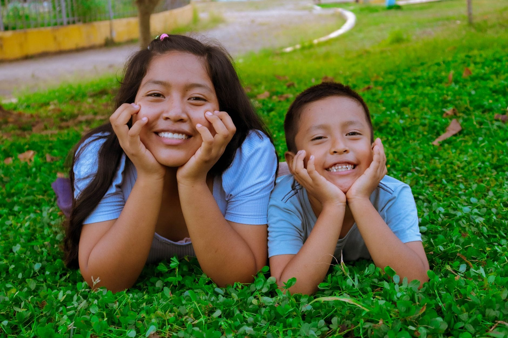
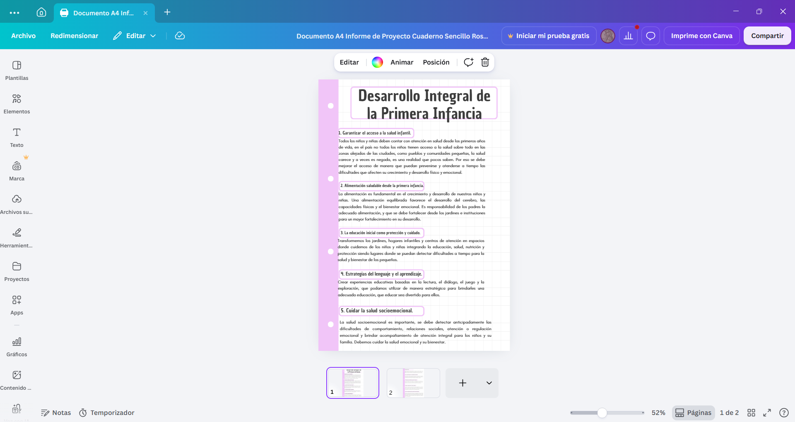
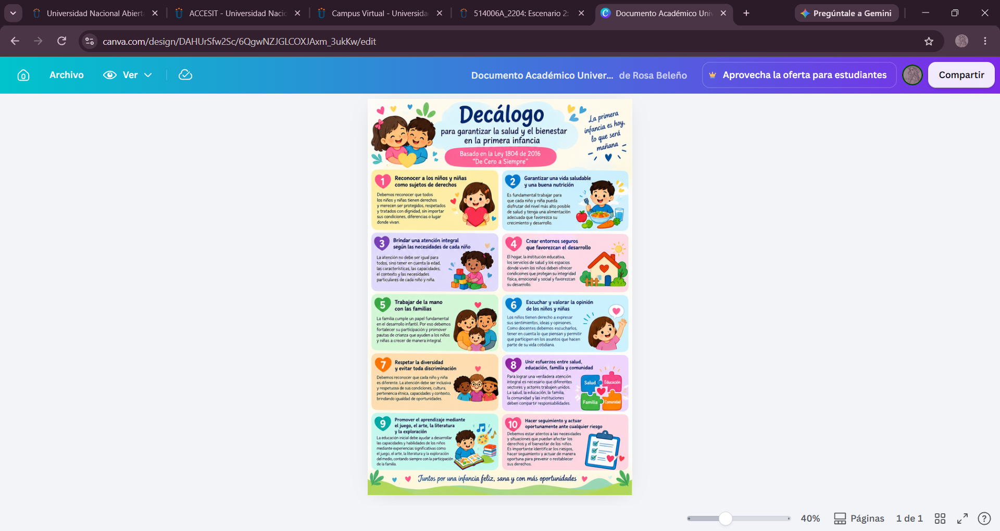
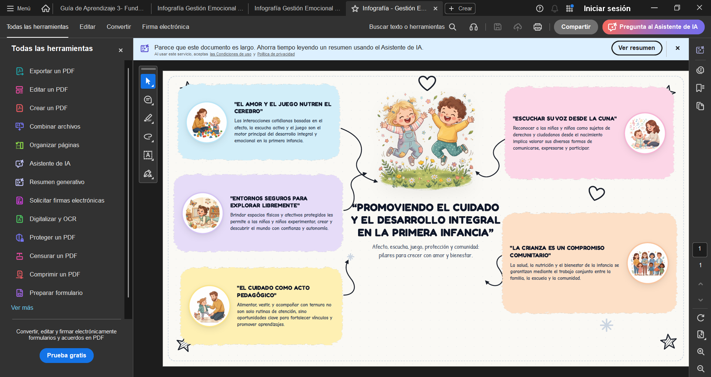
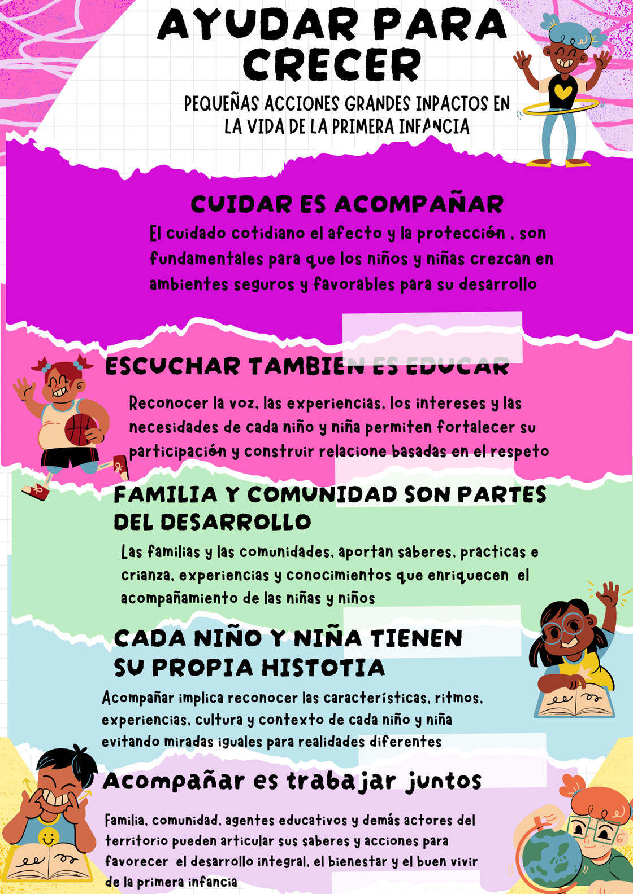
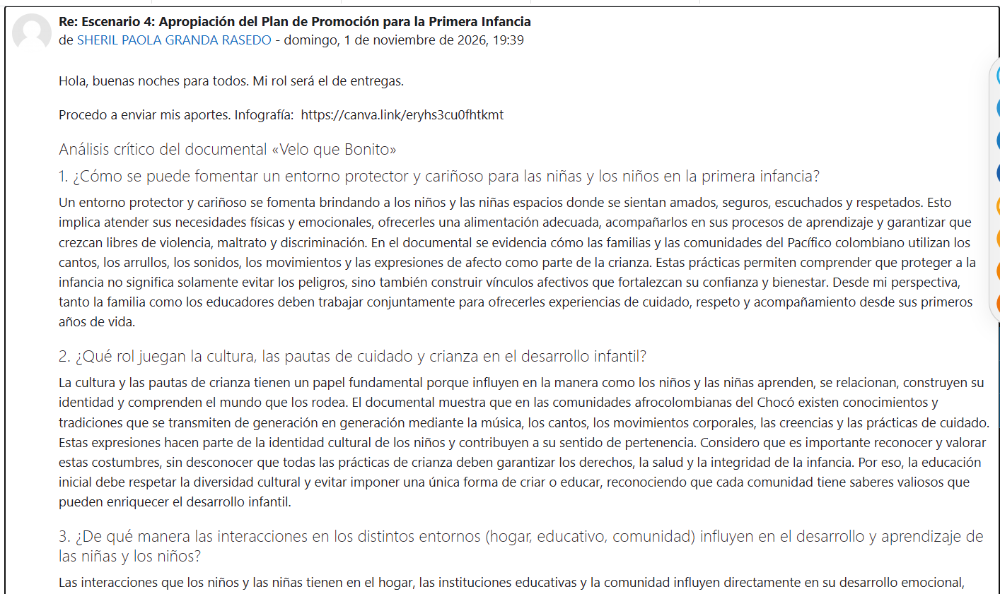
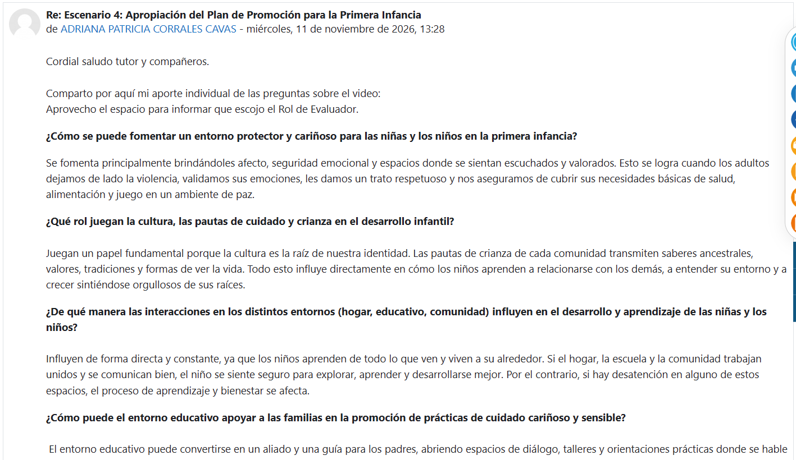

Garantizando el Derecho a la Salud en la Primera Infancia
Repositorio académico que reúne de manera rigurosa las actividades individuales y colaborativas realizadas por el grupo de investigadoras en cada uno de los Escenarios del curso: mapas conceptuales, análisis de referentes, decálogos, matrices contextuales, escritos de profundización y planes de promoción en salud.
Ficha Secuencia Didáctica Progreso: 80% (4/5)
Estructura del Repositorio por Escenarios
ODS y Salud Infantil
- Mapa Conceptual (ODS 3 y 4)
- Preguntas Orientadoras por Estudiante
Atención en Salud
- Decálogos por Estudiante
- Matriz de Análisis de Entornos
- Plan de Promoción (0 a 1 mes)
Salud como Derecho
- Piezas Comunicativas de Ciclos
- Escritos Teóricos (5 Temas)
- Diagnósticos Situacionales
- Plan de Promoción (Intencionalidades)
Plan de Promoción
- Infografías Cuidado Cariñoso
- Preguntas Reflexivas Documental
- Plan de Promoción (3 a 6 años)
Identificación de los Objetivos de Desarrollo Sostenible en relación con la salud infantil
Repositorio de actividades: Mapa conceptual colaborativo sobre ODS 3 y 4 y análisis de referentes teóricos mediante preguntas orientadoras sustentadas por estudiante.

Articulación ODS 3 y ODS 4
Organizador conceptual elaborado por el colectivo que interconecta las metas de salud neonatal e infantil, nutrición y estimulación temprana como condiciones indispensables para garantizar el aprendizaje y la educación inicial de calidad.
1. La Salud como Derecho Impostergable
¿Por qué es importante que la salud sea asumida como un derecho impostergable en la primera
infancia?
Porque constituye la base biológica, neurológica y emocional indispensable para la supervivencia y el
desarrollo integral. Las privaciones en salud o nutrición durante los primeros años generan daños
permanentes e irreversibles en las capacidades cognitivas y afectivas del ser humano.
2. ¿Cómo influyen los entornos (hogar, educativo, comunitario) en la garantía de la
salud?
Los entornos configuran la cotidianidad vital: un hogar seguro brinda afecto y saneamiento; la institución
educativa promueve hábitos higiénicos y socialización protegida; y la comunidad garantiza espacios libres
de violencias y acceso a servicios públicos.

3. Rol Pedagógico y Actores Intersectoriales
¿Cómo desde nuestro rol de pedagogos infantiles podemos favorecer el derecho a la
salud?
Como observadores privilegiados del neurodesarrollo en el aula, los pedagogos detectamos alertas tempranas
de desnutrición o malestar emocional, diseñamos experiencias lúdicas de autocuidado e higiene bucal, y
articulamos activamente a las familias con las redes de salud locales.
4. ¿Qué actores institucionales e intersectoriales facilitan la atención integral?
Articulación sinérgica entre el Ministerio de Salud, ICBF, Secretarías de Educación, EPS/IPS, comités de
infancia y líderes comunitarios mediante la Política de Estado "De Cero a Siempre" (Ley 1804).

Aportes al Debate y Síntesis Normativa de Referentes
Consolidación de aportes teóricos orientados a articular la garantía del derecho a la salud con los compromisos internacionales de la Convención sobre los Derechos del Niño y los ODS en Colombia, resaltando la corresponsabilidad ineludible de la escuela en la vigilancia de la salud integral.
Exploración contextual de la atención en salud en los territorios
Repositorio de actividades: Decálogo individual por estudiante, Matriz de análisis en los cuatro entornos del desarrollo infantil y Plan de promoción para el recién nacido (0 a 1 mes).

Decálogo Ilustrado: Salud Infantil
Cómic pedagógico en 3 páginas sobre lactancia materna, prevención de riesgos y afecto en el hogar.

Decálogo: Compromiso Territorial
Pautas de dignidad infantil, respeto a la diversidad cultural y acceso equitativo a servicios médicos de calidad.

Infografía: Cuidado Sensible y Entornos
Ruta secuencial que articula seguridad alimentaria, bienestar lúdico, enfoque diferencial y entornos afectivos.

Decálogo: Garantía y Ley 1804
Diez principios basados en la Política de Estado para el Desarrollo Integral de la Primera Infancia "De Cero a Siempre".
Decálogo Ético: Principios de Promoción de la Salud en la Escuela
Construcción de directrices éticas pedagógicas para maestras infantiles: respeto al ritmo biológico, no discriminación en la atención, vigilancia del bienestar nutricional y articulación con los centros de atención primaria.
Caracterización de la salud infantil en los cuatro entornos del desarrollo y articulación con los 5 momentos de la Ruta Integral de Atenciones (RIA):
¿Cómo se favorece la salud en el Hogar?
Vivienda digna, saneamiento básico, agua segura y alimentación balanceada. Pautas de crianza amorosa basadas en el buen trato y el juego, previniendo cualquier forma de castigo físico o violencia intrafamiliar.
¿Cómo se favorece la salud en el Entorno Salud?
Servicios de salud oportunos, cálidos y universales. Controles periódicos de crecimiento y desarrollo, vacunación completa, tamizajes sensoriales y consejería profesional en lactancia y nutrición.
¿Cómo se favorece la salud en el Entorno Educativo?
Ambientes pedagógicos seguros, higiénicos y estimulantes. Prácticas cotidianas de lavado lúdico de manos, meriendas saludables y pedagogías activas que fortalecen el bienestar socioemocional.
¿Cómo se favorece la salud en el Espacio Público?
Parques, senderos y zonas verdes limpios, seguros y accesibles para todos los niños y niñas, promoviendo el juego al aire libre, la actividad física y el encuentro comunitario.
Los 5 Momentos de la Ruta Integral de Atenciones (RIA):
1. Preconcepción & 2. Gestación
Educación preconcepcional, controles prenatales con micronutrientes y preparación para el parto humanizado y lactancia.
3. Recién Nacido (0 a 1 mes)
Tamizaje neonatal auditivo y metabólico, vacunas BCG y Hepatitis B neonatal, lactancia materna exclusiva y apego seguro.
4. 1 a 3 Años & 5. 3 a 6 Años
Valoración de crecimiento y desarrollo, salud visual y oral, hábitos de autocuidado y educación inicial integral.
Primeros pasos, grandes cuidados
Momento Vital: Nacimiento a primer mes (0 a 30 días de vida)
🎯 Justificación y Pertinencia
La etapa neonatal constituye la ventana más sensible para consolidar la supervivencia y el neurodesarrollo. Requiere atención articulada entre familia, salud y escuela.
🚨 Criterios de Urgencia
Cualquier alteración (infecciones, deshidratación, falta de apego o violencia) puede dejar secuelas neurológicas permanentes o provocar mortalidad prevenible.
Estrategias Prioritarias Articuladas:
Fundamentación del enfoque de salud como derecho en los territorios
Repositorio de actividades: Piezas comunicativas de ciclos de vida, Escritos teóricos sobre acompañamiento y Diagnóstico situacional de salud y nutrición en el territorio.

Acompañar es Reconocer Cada Historia
Respetar el ritmo madurativo, la identidad cultural y las vivencias familiares de cada niño como sujeto único.

El Amor y el Juego Nutren el Cerebro
Evidencia científica sobre cómo las interacciones cálidas y el juego espontáneo consolidan la arquitectura cerebral.

Ayudar para Crecer
Acompañar sin sobreproteger ni vulnerar: brindar herramientas que fomenten la seguridad emocional y la autoeficacia.

Juntos por un Desarrollo Feliz
La protección integral no es tarea de un solo actor; requiere sinergia institucional y comunitaria continua.

Ruta Secuencial y Dialéctica de los Ciclos de Vida
Mapa mental que ilustra la progresión evolutiva e hitos socioafectivos, motores y cognitivos para la intervención pedagógica oportuna.
Diagnóstico Situacional de Salud y Nutrición: Tierra Firme (Santa Cruz de Mompox, Bolívar)
Territorio: Hogar Infantil Comunitario, Corregimiento de Tierra Firme, Municipio de
Santa Cruz de Mompox, Bolívar.
Responsable del hogar entrevistada: Belkis Enith • Fecha de visita
presencial: 22 de octubre de 2026.
Equipo investigador: Adriana Patricia Corrales Cavas, María Barrozo, Rosa Elena Beleño
Arias y Sheril Paola Granda Rasedo.
| Diagnóstico situacional de salud y nutrición en el territorio: corregimiento de Tierra Firme, municipio de Santa Cruz de Mompox, Bolívar | ||
|---|---|---|
| Indicador / aspecto | Dato recolectado en la visita | Análisis e interpretación |
| Población infantil atendida | 10 niñas y niños: 6 niños (60 %) y 4 niñas (40 %). | La información corresponde a los 10 niños matriculados en el hogar infantil al momento de la entrevista; no representa por sí sola a toda la población infantil del corregimiento. |
| Grupo de edad | 5 niños y niñas entre 2 y 3 años (50 %) y 5 entre 3 y 4 años (50 %). | La distribución permite reconocer dos grupos de edad con igual participación dentro de la población consultada. |
| Esquema de vacunación | 10 de 10 con esquema completo para la edad (100 %), según lo informado por la persona entrevistada. | Es un resultado favorable reportado por el hogar; se recomienda mantener la verificación periódica de los carnés y los refuerzos correspondientes. |
| Controles de crecimiento y desarrollo | 10 de 10 asisten a controles (100 %), según la información recolectada. | La asistencia reportada constituye una oportunidad para el seguimiento oportuno del desarrollo y la detección de alertas. |
| Seguimiento de peso y talla | Se realiza seguimiento periódico a los 10 niños y niñas (100 %). | El seguimiento facilita reconocer cambios en el crecimiento. La interpretación clínica corresponde al personal de salud. |
| Situación nutricional | 1 niño presenta riesgo de malnutrición (10 %). No se reportan casos confirmados de malnutrición. | El riesgo identificado requiere continuidad del seguimiento nutricional. No debe confundirse riesgo con diagnóstico confirmado. |
| Acompañamiento institucional y nutricional | El puesto/servicio de salud acompaña cada 15 días. Se reporta seguimiento por nutricionista de Bienestar Familiar. | La periodicidad informada favorece la orientación y el seguimiento. Conviene mantener coordinación entre hogar, familia, Bienestar Familiar y salud. |
| Agua para consumo y alimentación | La entrevistada manifestó que cuentan con agua suficiente y segura. Se ofrecen desayuno, almuerzo y dos refrigerios. | La disponibilidad y seguridad del agua corresponden a lo reportado en la entrevista; no se aportó análisis de laboratorio. La información sobre lactancia, prevención de accidentes y necesidades prioritarias no fue precisada. |
Diagnóstico Situacional de Salud: Sector Higoamarillo (Chimichagua, Cesar)
Este diagnóstico corresponde al segundo territorio analizado y se construye a partir de la información comunitaria compartida sobre Higoamarillo, complementada con el Plan de Desarrollo Municipal de Chimichagua 2024–2027. La información comunitaria permite describir condiciones de acceso y cuidado; no se cuenta con denominadores ni registros locales suficientes para calcular porcentajes de cobertura. Por esta razón, no se asignan cifras estimadas a los indicadores.
| Diagnóstico situacional de salud en el territorio: sector Higoamarillo, municipio de Chimichagua, Cesar | ||
|---|---|---|
| Aspecto de salud | Información disponible | Análisis e interpretación |
| Acceso a servicios de salud | La comunidad cuenta con un puesto de salud. Según la información comunitaria, la atención se presta los sábados y domingos. | La existencia del puesto representa un recurso local; sin embargo, la atención limitada a determinados días puede dificultar la consulta oportuna ante necesidades que surjan durante la semana. |
| Atención a mujeres gestantes | Se realizan controles prenatales cuando el personal puede desplazarse hasta la comunidad. Cuando no es posible, las gestantes deben trasladarse a la cabecera municipal de Chimichagua. | Los desplazamientos y las dificultades de transporte pueden convertirse en barreras para la continuidad de los controles prenatales, especialmente en temporada de lluvias. |
| Vacunación infantil | Se realizan jornadas de vacunación para niñas y niños en la comunidad. No se dispone de un consolidado local del número de menores con esquema completo. | Las jornadas acercan los servicios a las familias. Para establecer cobertura real se requiere consultar los registros nominales del PAI y la población objeto. |
| Infraestructura y talento humano | El Plan de Desarrollo Municipal 2024–2027 clasifica el estado del puesto de salud de Higoamarillo como regular y reconoce, entre las problemáticas rurales, la falta de médicos permanentes (Alcaldía Municipal de Chimichagua, 2024). | La condición de la infraestructura y la disponibilidad de personal son factores que inciden en la oportunidad, continuidad y calidad de la atención. |
| Agua para consumo | La comunidad se abastece de un pozo comunitario. De acuerdo con la información compartida, el agua no recibe tratamiento ni cloración antes de su distribución. | No es posible afirmar que el agua sea potable sin resultados de análisis. Se requiere verificar su calidad y gestionar tratamiento, desinfección y vigilancia sanitaria. |
| Transporte y acceso geográfico | Se reportan dificultades de desplazamiento, especialmente durante la temporada de lluvias. | Las barreras geográficas pueden afectar la asistencia a controles, la atención de urgencias y el acceso a servicios preventivos. |
Apropiación del Plan de promoción para la primera infancia
Repositorio de actividades: Infografías del marco de Cuidado Cariñoso y Sensible (UNICEF / OMS), Preguntas reflexivas del documental del Pacífico colombiano y Plan de promoción preescolar (3 a 6 años).

Los 5 Componentes del Cuidado Sensible
1. Buena salud • 2. Nutrición adecuada • 3. Atención receptiva • 4. Protección y seguridad • 5. Oportunidades para el aprendizaje temprano.

Potencialidades en el Entorno Educativo
Cómo los educadores infantiles materializan el cuidado sensible organizando ambientes enriquecidos que detonan la curiosidad y la seguridad emocional.

El cuidado cariñoso y sensible
Pilar fundamental para el desarrollo integral en la primera infancia y el bienestar infantil.
“Velo, ¡qué bonito es nacer y crecer en mi Pacífico colombiano!”
Reflexiones pedagógicas sobre las prácticas de crianza tradicionales, saberes ancestrales de parteras y sabedoras, cantos, arrullos y la movilización comunitaria en los territorios del Pacífico colombiano.
"En el Pacífico la crianza es un tejido colectivo: una niña o un niño es cuidado por todo el río y por toda la vereda."
▶️ Reproducir en modalCaptura del Foro de Discusión • Sheril Paola Granda Rasedo
Registro de la intervención académica en el foro colaborativo de la plataforma UNAD.

1. ¿Cómo se puede fomentar un entorno protector y cariñoso para las niñas y los niños en la primera infancia?
Un entorno protector y cariñoso se fomenta brindando a los niños y las niñas espacios donde se sientan amados, seguros, escuchados y respetados. Esto implica atender sus necesidades físicas y emocionales, ofrecerles una alimentación adecuada, acompañarlos en sus procesos de aprendizaje y garantizar que crezcan libres de violencia, maltrato y discriminación. En el documental se evidencia cómo las familias y las comunidades del Pacífico colombiano utilizan los cantos, los arrullos, los sonidos, los movimientos y las expresiones de afecto como parte de la crianza. Estas prácticas permiten comprender que proteger a la infancia no significa solamente evitar los peligros, sino también construir vínculos afectivos que fortalezcan su confianza y bienestar. Desde mi perspectiva, tanto la familia como los educadores deben trabajar conjuntamente para ofrecerles experiencias de cuidado, respeto y acompañamiento desde sus primeros años de vida.
2. ¿Qué rol juegan la cultura, las pautas de cuidado y crianza en el desarrollo infantil?
La cultura y las pautas de crianza tienen un papel fundamental porque influyen en la manera como los niños y las niñas aprenden, se relacionan, construyen su identidad y comprenden el mundo que los rodea. El documental muestra que en las comunidades afrocolombianas del Chocó existen conocimientos y tradiciones que se transmiten de generación en generación mediante la música, los cantos, los movimientos corporales, las creencias y las prácticas de cuidado. Estas expresiones hacen parte de la identidad cultural de los niños y contribuyen a su sentido de pertenencia. Considero que es importante reconocer y valorar estas costumbres, sin desconocer que todas las prácticas de crianza deben garantizar los derechos, la salud y la integridad de la infancia. Por eso, la educación inicial debe respetar la diversidad cultural y evitar imponer una única forma de criar o educar, reconociendo que cada comunidad tiene saberes valiosos que pueden enriquecer el desarrollo infantil.
3. ¿De qué manera las interacciones en los distintos entornos (hogar, educativo, comunidad) influyen en el desarrollo y aprendizaje de las niñas y los niños?
Las interacciones que los niños y las niñas tienen en el hogar, las instituciones educativas y la comunidad influyen directamente en su desarrollo emocional, social, físico y cognitivo. En el hogar reciben sus primeras muestras de amor, protección y acompañamiento; en el entorno educativo fortalecen sus habilidades mediante el juego, la exploración, la comunicación y la convivencia con otras personas; mientras que en la comunidad aprenden a relacionarse con su cultura, sus tradiciones y su entorno social. El documental permite observar cómo los diferentes miembros de la comunidad participan en la crianza y cómo las experiencias culturales, musicales y corporales hacen parte del aprendizaje desde los primeros años. Esto demuestra que la educación de la primera infancia no es responsabilidad exclusiva de los docentes o de las familias, sino que requiere la participación de todos los actores que rodean al niño. Cuando estos entornos trabajan de manera articulada, se generan mejores oportunidades para un desarrollo integral.
4. ¿Cómo puede el entorno educativo apoyar a las familias en la promoción de prácticas de cuidado cariñoso y sensible?
El entorno educativo puede apoyar a las familias mediante espacios de orientación, diálogo y participación donde se compartan conocimientos sobre la importancia del cuidado, la protección, la alimentación, la salud, el juego y el acompañamiento emocional durante la primera infancia. También puede desarrollar talleres, encuentros familiares y actividades pedagógicas que permitan fortalecer los vínculos afectivos entre padres, cuidadores y niños. Considero que los docentes deben reconocer las experiencias y los conocimientos que las familias han adquirido a través de sus propias tradiciones, en lugar de limitarse a transmitir instrucciones sobre cómo deben criar a sus hijos. El documental es un ejemplo de la importancia de valorar los saberes culturales y comunitarios, por lo que las instituciones educativas pueden incorporar canciones, juegos tradicionales, relatos y expresiones culturales en sus actividades. De esta manera, se fortalece la relación entre familia y escuela y se construye un acompañamiento más respetuoso y cercano a las necesidades de cada niño.
5. ¿Qué desafíos enfrentan las comunidades en la implementación de entornos protectores?
Las comunidades enfrentan diferentes desafíos para garantizar entornos protectores durante la primera infancia, entre ellos la falta de recursos económicos, las dificultades de acceso a los servicios de salud y educación, las condiciones de pobreza, la violencia, la desigualdad y la falta de acompañamiento institucional. En algunas comunidades rurales y culturalmente diversas también existen dificultades relacionadas con el acceso a programas de atención integral que reconozcan sus costumbres y necesidades particulares. A partir del documental, considero que otro desafío importante es evitar que los saberes ancestrales y las prácticas culturales de crianza sean desconocidos o desvalorizados, ya que estos representan una parte fundamental de la identidad de las comunidades. Por esta razón, es necesario fortalecer el trabajo conjunto entre las familias, las instituciones educativas, los servicios de salud y las organizaciones comunitarias. Un entorno protector no se construye únicamente con buenas intenciones, sino con oportunidades, recursos, respeto por la diversidad y compromiso de toda la sociedad.
Captura del Foro de Discusión • Valentina Tinoco Díaz
Registro de la intervención académica en el foro colaborativo de la plataforma UNAD.

1. ¿Cómo se puede fomentar un entorno protector y cariñoso para las niñas y los niños en la primera infancia?
Un entorno protector y cariñoso se fomenta mediante relaciones basadas en el amor, el respeto, la confianza, la escucha y el acompañamiento permanente de los adultos. Es fundamental que las niñas y los niños crezcan en espacios donde se sientan seguros, valorados y reconocidos como sujetos de derechos, capaces de expresar sus emociones, necesidades e intereses.
En el documental se puede reconocer que las comunidades del Pacífico colombiano tienen formas particulares de expresar el afecto y acompañar la crianza, mediante los arrullos, los cantos, los juegos, los movimientos corporales, las historias y la participación de las familias extensas. Estas prácticas muestran que el cuidado infantil no es una responsabilidad exclusiva de la madre o el padre, sino que también involucra a los abuelos, familiares y demás integrantes de la comunidad.
Desde mi perspectiva como futura docente infantil, considero que es necesario promover ambientes libres de violencia, fortalecer los vínculos afectivos, escuchar a los niños, respetar sus ritmos de desarrollo y garantizar condiciones adecuadas de alimentación, salud, educación y protección. De esta manera, se construyen entornos donde la infancia pueda crecer con tranquilidad, alegría y confianza.
2. ¿Qué rol juegan la cultura, las pautas de cuidado y crianza en el desarrollo infantil?
La cultura y las pautas de cuidado y crianza desempeñan un papel fundamental en el desarrollo infantil, porque permiten que las niñas y los niños construyan su identidad, reconozcan sus raíces, desarrollen sentido de pertenencia y aprendan a relacionarse con las personas que hacen parte de su entorno.
El documental permite comprender que las comunidades afrocolombianas del Pacífico transmiten sus conocimientos y tradiciones desde los primeros años de vida a través de la música, los sonidos, los cantos, los arrullos, las danzas, los juegos y las prácticas relacionadas con el cuidado del cuerpo. Estas expresiones culturales no son solamente manifestaciones tradicionales, sino también formas de comunicación, aprendizaje y construcción de vínculos afectivos.
Considero que las pautas de crianza deben comprenderse desde el reconocimiento de la diversidad cultural, evitando imponer modelos únicos de educación y cuidado. Cada comunidad tiene saberes y experiencias que enriquecen la formación de la infancia. Sin embargo, es importante que las prácticas culturales se desarrollen respetando siempre la dignidad, la integridad y los derechos de los niños y las niñas.
Por esta razón, como futuras docentes debemos valorar los conocimientos de las familias y las comunidades, integrándolos a las experiencias pedagógicas para fortalecer la identidad cultural y promover un desarrollo integral.
3. ¿De qué manera las interacciones en los distintos entornos (hogar, educativo, comunidad) influyen en el desarrollo y aprendizaje de las niñas y los niños?
Las interacciones que experimentan las niñas y los niños en el hogar, las instituciones educativas y la comunidad influyen directamente en su desarrollo físico, emocional, social, comunicativo y cognitivo. Cada uno de estos espacios ofrece experiencias que les permiten descubrir el mundo, adquirir conocimientos, desarrollar habilidades y construir relaciones con los demás.
Desde un análisis reflexivo, considero que estos tres entornos deben trabajar de manera articulada, porque el desarrollo infantil no ocurre de forma aislada. Cuando existe una relación de cooperación entre la familia, los educadores y la comunidad, se generan mayores oportunidades para que los niños aprendan, se expresen libremente y desarrollen sus capacidades en ambientes seguros y afectivos.
4. ¿Cómo puede el entorno educativo apoyar a las familias en la promoción de prácticas de cuidado cariñoso y sensible?
El entorno educativo puede apoyar a las familias mediante procesos de orientación, acompañamiento y formación que permitan fortalecer sus conocimientos sobre el cuidado, la crianza respetuosa y el desarrollo integral de las niñas y los niños.
Para lograrlo, las instituciones educativas pueden desarrollar encuentros con padres, madres y cuidadores, talleres sobre pautas de crianza, actividades de integración familiar y espacios de diálogo donde se compartan experiencias y saberes relacionados con el bienestar infantil.
También es importante que los docentes orienten a las familias sobre la importancia de escuchar a los niños, reconocer sus emociones, evitar los castigos físicos y las expresiones de violencia, establecer hábitos saludables y brindar acompañamiento afectivo durante las diferentes etapas de crecimiento.
Retomando el documental, considero especialmente valioso que las instituciones educativas reconozcan e integren las tradiciones culturales de las familias, como los cantos, los arrullos, las historias y los juegos tradicionales. Estas experiencias permiten que los conocimientos familiares sean valorados dentro de los procesos educativos y fortalecen la relación entre la escuela y la comunidad.
Como futura docente infantil, considero que nuestro compromiso no debe limitarse a enseñar dentro del aula, sino que también debemos convertirnos en orientadoras y acompañantes de las familias, reconociendo sus fortalezas y promoviendo prácticas de cuidado sensibles, respetuosas y coherentes con los derechos de la infancia.
5. ¿Qué desafíos enfrentan las comunidades en la implementación de entornos protectores?
Las comunidades enfrentan diferentes desafíos para garantizar entornos protectores durante la primera infancia. Entre ellos se encuentran las dificultades económicas, la falta de acceso oportuno a servicios de salud y educación, las condiciones de infraestructura, la violencia, las desigualdades sociales y la limitada presencia institucional en algunos territorios.
En el caso de las comunidades del Pacífico colombiano, el documental permite reconocer una gran riqueza cultural y una importante participación comunitaria en las prácticas de crianza. Sin embargo, también invita a reflexionar sobre la necesidad de que estas comunidades cuenten con mayores oportunidades y garantías para proteger los derechos de sus niños y niñas.
Otro desafío importante es preservar los saberes ancestrales y las tradiciones culturales frente a los cambios sociales, evitando que las nuevas generaciones pierdan el vínculo con sus raíces y su identidad. Asimismo, es necesario lograr que las instituciones reconozcan la diversidad cultural y desarrollen estrategias de atención que respondan a las características y necesidades de cada territorio.
Desde mi punto de vista, la construcción de entornos protectores requiere un compromiso compartido entre las familias, los docentes, las organizaciones comunitarias y el Estado. No es suficiente reconocer la importancia del amor y el cuidado; también se necesitan acciones concretas, recursos, programas de acompañamiento y políticas públicas que garanticen condiciones dignas para el desarrollo infantil.
Reflexión Final: El Buen Vivir y la Diversidad en el Pacífico Colombiano
El documental “Velo, ¡qué bonito es nacer y crecer en mi Pacífico colombiano!” permite comprender que la primera infancia debe ser acompañada desde el amor, el respeto, la identidad cultural y la participación comunitaria. Una de las enseñanzas más importantes es reconocer que existen diferentes maneras de cuidar, criar y educar, y que cada cultura aporta conocimientos valiosos para el desarrollo de las niñas y los niños.
Desde mi formación como futura licenciada en Educación Infantil, considero que debemos asumir el compromiso de construir ambientes educativos protectores, incluyentes y sensibles a las realidades de las familias. Esto implica escuchar a los niños, respetar sus particularidades, reconocer sus tradiciones y promover experiencias que fortalezcan su autonomía, seguridad emocional y aprendizaje.
Finalmente, considero que garantizar una infancia feliz y protegida no es una responsabilidad exclusiva de las familias ni de las instituciones educativas, sino un compromiso colectivo. Es necesario trabajar unidos para que todos los niños y las niñas, independientemente de su lugar de nacimiento o condición social, tengan la oportunidad de crecer en entornos donde sean amados, respetados, escuchados y reconocidos como sujetos de derechos.
Captura del Foro de Discusión • Adriana Patricia Corrales Cavas
Registro de la intervención académica en el foro colaborativo de la plataforma UNAD.

1. ¿Cómo se puede fomentar un entorno protector y cariñoso para las niñas y los niños en la primera infancia?
Se fomenta principalmente brindándoles afecto, seguridad emocional y espacios donde se sientan escuchados y valorados. Esto se logra cuando los adultos dejamos de lado la violencia, validamos sus emociones, les damos un trato respetuoso y nos aseguramos de cubrir sus necesidades básicas de salud, alimentación y juego en un ambiente de paz.
2. ¿Qué rol juegan la cultura, las pautas de cuidado y crianza en el desarrollo infantil?
Juegan un papel fundamental porque la cultura es la raíz de nuestra identidad. Las pautas de crianza de cada comunidad transmiten saberes ancestrales, valores, tradiciones y formas de ver la vida. Todo esto influye directamente en cómo los niños aprenden a relacionarse con los demás, a entender su entorno y a crecer sintiéndose orgullosos de sus raíces.
3. ¿De qué manera las interacciones en los distintos entornos (hogar, educativo, comunidad) influyen en el desarrollo y aprendizaje de las niñas y los niños?
Influyen de forma directa y constante, ya que los niños aprenden de todo lo que ven y viven a su alrededor. Si el hogar, la escuela y la comunidad trabajan unidos y se comunican bien, el niño se siente seguro para explorar, aprender y desarrollarse mejor. Por el contrario, si hay desatención en alguno de estos espacios, el proceso de aprendizaje y bienestar se afecta.
4. ¿Cómo puede el entorno educativo apoyar a las familias en la promoción de prácticas de cuidado cariñoso y sensible?
El entorno educativo puede convertirse en un aliado y una guía para los padres, abriendo espacios de diálogo, talleres y orientaciones prácticas donde se hable sin tapujos sobre crianza respetuosa, salud emocional y pautas de cuidado. Así, las familias se sienten respaldadas y aprenden herramientas nuevas que pueden aplicar en casa.
5. ¿Qué desafíos enfrentan las comunidades en la implementación de entornos protectores?
Se enfrentan a retos muy duros, como la falta de recursos económicos, el abandono estatal en algunas regiones, las brechas de desigualdad, la violencia social o el desplazamiento. Todo esto debilita el tejido comunitario y hace que sea mucho más difícil garantizar espacios seguros y plenos para que los niños crezcan protegidos.
La Interculturalidad como Eje del Derecho a la Salud
El análisis del documental reafirma que no existe una única forma de cuidar y educar. La salud en la primera infancia no puede reducirse a parámetros clínicos estandarizados: debe contemplar la memoria territorial, los vínculos comunitarios y el respeto irrestricto por la vida. Como pedagogas infantiles, asumimos la responsabilidad de construir propuestas formativas inclusivas y afectivas que celebren la diversidad.
| Plan de promoción en salud y bienestar en el entorno educativo para favorecer el desarrollo integral en la primera infancia | |
|---|---|
| Nombre: |
“Crecer sanos y felices: estrategias pedagógicas para la promoción de la salud, el autocuidado y el bienestar integral en la primera infancia”. |
| Momento o grupo etario: |
Niñas y niños de tres a seis años. |
| Justificación de la elección: |
El plan se formula a partir del único diagnóstico situacional incluido en el documento del Escenario 3, correspondiente al hogar infantil del corregimiento de Tierra Firme, municipio de Santa Cruz de Mompox, Bolívar. La información recolectada reporta que los 10 niños y niñas matriculados cuentan con esquema de vacunación completo, asisten a controles de crecimiento y desarrollo y reciben seguimiento periódico de peso y talla. Asimismo, se identificó un niño con riesgo de malnutrición (10 %), situación que requiere continuidad del seguimiento nutricional y articulación con las familias y los servicios de salud. Estos resultados orientan la necesidad de fortalecer, desde el entorno educativo, la promoción de hábitos saludables, la alimentación adecuada, la higiene, el autocuidado, el bienestar emocional y la prevención de riesgos. La elección de los niños y las niñas de tres a seis años permite desarrollar experiencias pedagógicas acordes con esta etapa del desarrollo, sin sustituir las funciones propias del personal sanitario. Las acciones propuestas se fundamentan exclusivamente en los hallazgos de Tierra Firme y en la corresponsabilidad entre agentes educativos, familias y servicios de salud. (Ministerio de Educación Nacional, 2013; Organización Panamericana de la Salud [OPS], 2021). |
| Atención priorizada: |
Promoción de hábitos de vida saludables, fortalecimiento del autocuidado y prevención de riesgos para favorecer el bienestar físico, emocional y social de los niños y las niñas de tres a seis años en el entorno educativo. La atención priorizada se orienta al desarrollo de acciones educativas y preventivas que contribuyan a mejorar las condiciones de salud y bienestar de los niños y las niñas, mediante experiencias cotidianas adaptadas a sus características de desarrollo. Se propone trabajar de manera articulada los hábitos de higiene personal y bucal, la alimentación saludable, la actividad física, el cuidado emocional, la convivencia y la prevención de accidentes. Estos componentes se relacionan entre sí, puesto que el bienestar infantil depende de la interacción entre las condiciones físicas del entorno, las relaciones afectivas, las oportunidades de aprendizaje y las prácticas de cuidado que acompañan la vida cotidiana. En primer lugar, se promoverán experiencias pedagógicas que permitan fortalecer los hábitos de higiene y autocuidado. Mediante demostraciones del lavado de manos, cuentos, canciones, secuencias ilustradas y rutinas diarias, se buscará que los niños y las niñas comprendan la importancia de mantener su cuerpo limpio, cuidar su salud bucal y contribuir a la conservación de espacios higiénicos. Las actividades deberán desarrollarse con acompañamiento adulto, materiales adecuados y oportunidades para practicar, de modo que el aprendizaje no se limite a memorizar recomendaciones, sino que se refleje progresivamente en las acciones cotidianas. En segundo lugar, se desarrollarán experiencias orientadas a la alimentación saludable y al movimiento corporal. Se podrán realizar actividades de reconocimiento de alimentos, conversaciones sobre la importancia del agua y los alimentos variados, juegos motores, rondas, circuitos de movimiento y actividades al aire libre en espacios seguros. Estas experiencias buscarán favorecer el desarrollo de las habilidades motrices, el disfrute del movimiento y la comprensión inicial de la relación entre alimentación, actividad física y bienestar. Las propuestas deberán considerar las necesidades individuales, las posibles restricciones alimentarias y las condiciones de acceso de las familias, evitando imponer prácticas que desconozcan sus realidades. En tercer lugar, se fortalecerá el bienestar emocional y la convivencia mediante actividades que ayuden a identificar y expresar emociones, reconocer las necesidades propias y ajenas, resolver desacuerdos de forma pacífica y acudir a personas adultas de confianza ante situaciones que generen inseguridad. El uso de cuentos, títeres, juegos cooperativos, dibujos y conversaciones guiadas permitirá crear oportunidades para hablar sobre el respeto, la empatía, el buen trato y la protección. Estas acciones deben acompañarse de relaciones pedagógicas afectuosas y de protocolos institucionales adecuados para actuar cuando se identifiquen posibles situaciones de vulneración de derechos. En cuarto lugar, se promoverá la prevención de accidentes mediante la identificación de riesgos presentes en los espacios educativos, el uso adecuado de los materiales y la construcción de rutinas seguras durante el juego, la alimentación, los desplazamientos y las actividades colectivas. Esta labor requiere que los agentes educativos supervisen los espacios, identifiquen condiciones que puedan ocasionar lesiones y adopten medidas preventivas. La enseñanza del autocuidado debe complementarse con la responsabilidad institucional de garantizar ambientes seguros y accesibles. Finalmente, se fortalecerá la participación familiar y la articulación con los servicios de salud. Para ello, se podrán compartir orientaciones sobre hábitos saludables, desarrollar actividades que vinculen a las familias con las experiencias educativas y facilitar información sobre las rutas de atención disponibles. Cuando se identifiquen necesidades relacionadas con el crecimiento, el desarrollo, la salud oral, la vacunación o posibles señales de alerta, se orientará a las familias para que consulten los servicios competentes, respetando la confidencialidad y los procedimientos institucionales. Así, la atención priorizada integrará la promoción, la prevención, el acompañamiento educativo y la corresponsabilidad, sin atribuir a la institución educativa funciones propias del personal sanitario. (Ministerio de Educación Nacional, 2013; OPS, 2021). |
| Objetivo general: |
Promover la salud y el bienestar integral de los niños y las niñas de tres a seis años mediante la implementación de estrategias pedagógicas, lúdicas y participativas en el entorno educativo que favorezcan la adquisición progresiva de hábitos de vida saludables, el fortalecimiento del autocuidado, el bienestar emocional, la convivencia respetuosa y la prevención de riesgos, a través de la participación corresponsable de los agentes educativos y las familias y la articulación con los servicios de salud, contribuyendo a la garantía de sus derechos y al desarrollo armónico de sus capacidades físicas, emocionales y sociales. |
| Objetivos específicos: (Máximo dos) |
Objetivo específico 1. Fortalecer en los niños y las niñas de tres a seis años la apropiación y práctica progresiva de hábitos de higiene, alimentación saludable, actividad física y autocuidado emocional, para favorecer su autonomía y bienestar integral. Objetivo específico 2. Consolidar la corresponsabilidad entre las familias y los agentes educativos para promover prácticas de cuidado, reconocer oportunamente señales de alerta y orientar a las familias hacia los servicios de salud cuando sea necesario. |
| Atenciones | |
| Atención 1: Observación cualitativa y seguimiento articulado del crecimiento y desarrollo integral de cada niña o niño, vinculando a las familias con las valoraciones periódicas en salud. |
Acciones y descripción: 1. Laboratorio de exploración 'Mi cuerpo cuenta su historia': Se adecuará el espacio pedagógico con estaciones de espejos panorámicos, álbumes fotográficos familiares aportados previamente y siluetas corporales de tela en distintos tamaños que representan las etapas desde el nacimiento hasta los seis años. A través de una conversación mediada por un títere explorador, las niñas y los niños observarán las transformaciones de su cuerpo, compararán sus logros motores y comunicativos actuales con los de su primera infancia y reconocerán que cada persona crece de manera singular. Seguidamente, trabajarán en parejas para trazar el contorno de sus manos y pies sobre lienzos de tela ecológica, decorando sus creaciones con tintes naturales. La comparación de las siluetas tendrá un propósito expresivo y de exploración, no de medición antropométrica ni de valoración clínica. Durante la jornada, la docente en formación diligenciará la ficha de seguimiento cualitativo del desarrollo (observando coordinación, lenguaje, resolución de problemas e interacción social), aclarando en la nota pedagógica que se trata de una observación educativa y descriptiva, que no establece diagnósticos ni sustituye la valoración del personal de salud; cuando surjan inquietudes, se orientará a la familia para consultar los servicios correspondientes. Al finalizar, se organizará una galería abierta para las familias acompañada de un plegable sobre el calendario de consultas de crecimiento y desarrollo. 2. Rally psicomotor 'Desafíos en movimiento': Partiendo de una narrativa de expedición por la naturaleza, se diseñará un recorrido psicomotor en el espacio abierto o patio institucional compuesto por cuatro retos progresivos: desplazamiento cuadrupédico bajo túneles de tela, marcha sobre vigas bajas de equilibrio transportando saquitos de semillas, lanzamientos de precisión hacia aros suspendidos y ensamblaje de piezas geométricas de gran formato. Este ejercicio permitirá observar en contexto la tonicidad muscular, la lateralidad, la planificación motora y la perseverancia frente a retos cotidianos, evitando cualquier dinámica de competencia o exclusión. Posteriormente, en pequeños grupos, los participantes dialogarán sobre qué movimientos les resultaron más sencillos y cuáles requirieron mayor concentración, plasmando su experiencia mediante estampado con esponjas. Como cierre, se remitirá a madres, padres y cuidadores un informe descriptivo de las fortalezas y situaciones observadas, sin emitir diagnósticos, junto con orientaciones para que la familia consulte al servicio de salud cuando tenga inquietudes sobre el desarrollo. (Ministerio de Educación Nacional, 2013). |
|
Recursos: Espejos acrílicos seguros, fotografías familiares de etapas previas, siluetas corporales en tela, lienzos de algodón, cintas métricas flexibles, tintes vegetales o temperas lavables, ficha de observación cualitativa del desarrollo, túneles de tela, vigas bajas de equilibrio, saquitos de semillas, aros suspendidos, bloques de ensamble, esponjas y plegables informativos sobre consultas de crecimiento y desarrollo. |
|
|
Actores mediadores: Docente titular, docente en formación, auxiliar pedagógica, directivos docentes, madres, padres, personas cuidadoras y profesionales de medicina y enfermería del programa de crecimiento y desarrollo. |
|
|
Formas de participación:
|
|
| Atención 2: Seguimiento nutricional, promoción de la alimentación saludable con identidad territorial y orientaciones sobre desparasitación y micronutrientes. |
Acciones y descripción: 1. Huerta sensorial y feria de sabores de nuestra tierra: La experiencia se desarrollará ambientando el aula como un mercado campesino local con canastos de alimentos frescos propios de la región (frutas de cosecha, hortalizas, tubérculos, granos, cereales y lácteos), acompañados de algunos productos industriales empaquetados para establecer contrastes reales. Antes de la experiencia, el equipo educativo y la persona encargada de la alimentación verificarán con las familias posibles alergias, intolerancias, restricciones alimentarias y necesidades particulares, además de las condiciones de higiene e inocuidad. Las niñas y los niños explorarán mediante el tacto, el olfato y, cuando sea seguro y voluntario, la degustación de alimentos naturales, conversando sobre quiénes cultivan los alimentos, cómo llegan a la mesa y qué preparaciones tradicionales cocinan sus abuelas y familias. A través de un juego de asociación llamado '¿Qué necesita mi cuerpo para jugar y pensar?', vincularán cada grupo de alimentos con funciones vitales como tener energía, fortalecer huesos y protegerse de enfermedades, destacando el consumo de agua pura frente a jugos artificiales o gaseosas. Posteriormente, elaborarán en equipo un recetario ilustrado con dibujos y dictados al adulto sobre sus platos saludables favoritos. Finalmente, se socializará el recetario con los hogares junto con una ficha pedagógica que explica la importancia del seguimiento nutricional, la desparasitación periódica y el suministro de micronutrientes formulados por el sector salud. 2. Taller culinario 'Pequeños chefs autónomos': Iniciando con el protocolo higiénico de lavado de manos y colocación de delantales, se presentará a las niñas y los niños una estación culinaria adaptada a su estatura con recipientes individuales, cucharas medidoras, pinzas de madera, platos hondos y vasos irrompibles. Se explicará el uso seguro de cada utensilio y la importancia de servirse cantidades acordes con su apetito para valorar los alimentos y evitar desperdicios. A continuación, prepararán de manera autónoma una receta fría nutritiva (brochetas de frutas frescas con yogur natural y semillas de chía o avena), seleccionando libremente entre los ingredientes previamente verificados como seguros para cada participante y practicando habilidades de coordinación fina al ensartar y servir. Durante el consumo colectivo se fomentará la conversación amable, el reconocimiento de sabores y el respeto por las preferencias individuales, sin obligar a probar ni consumir alimentos. Al concluir, cada participante colaborará en la recolección de residuos orgánicos para compostaje, la entrega de utensilios y la limpieza de su mesa, reflexionando sobre su creciente independencia en el cuidado nutricional. (Ministerio de Educación Nacional, 2013; OPS, 2021). |
|
Recursos: Canastos de mimbre, alimentos frescos regionales (frutas, verduras, granos, tubérculos), empaques de productos ultraprocesados para análisis, cartulinas y marcadores para el recetario ilustrado, delantales infantiles, recipientes individuales, pinzas de madera, cucharas, vasos, agua potable, jabón líquido, toallas y fichas informativas sobre nutrición, micronutrientes y desparasitación. |
|
|
Actores mediadores: Docente titular, docente en formación, auxiliar pedagógica, manipuladora de alimentos, madres, padres, personas cuidadoras y profesionales de nutrición y salud pública. |
|
|
Formas de participación:
|
|
| Atención 3: Promoción del cuidado preventivo de la salud oral, visual y auditiva, hábitos de higiene personal e inmunización oportuna. |
Acciones y descripción: 1. Estación pedagógica de autocuidado 'Guardianes de nuestra sonrisa y cuerpo limpio': Se transformará un rincón del aula en una estación interactiva de autocuidado mediante el juego simbólico, utilizando espejos de mano, relojes de arena de dos minutos, macromodelos dentales, lupas didácticas y un cuento sonorizado sobre cómo el agua, el jabón y el cepillado protegen el organismo. Las niñas y los niños explorarán con lupas simulaciones ilustradas de bacterias en dientes y manos, comprendiendo por qué el aseo diario previene infecciones respiratorias, gastrointestinales y caries. Seguidamente, practicarán en pequeños turnos la técnica de lavado de manos en el lavamanos siguiendo una secuencia pictográfica y ensayarán sobre los modelos dentales el barrido correcto de encías y muelas, reforzando la regla de uso estrictamente personal de cepillos, toallas y vasos. Como producto pedagógico, elaborarán un calendario semanal de autocuidado con sellos de colores para llevar a casa, acompañado de una circular que invita a las familias a gestionar los controles odontológicos de acuerdo con las orientaciones del servicio de salud y revisar el carné de vacunación para verificar si se requieren dosis pendientes. 2. Estación multisensorial 'Escucho con atención, miro con cuidado': La experiencia se organizará mediante dos circuitos sensoriales rotativos para explorar los sentidos de la vista y el oído y conversar sobre su cuidado; no constituyen pruebas de detección ni valoraciones visuales o auditivas. En el circuito auditivo ('El bosque de los ecos'), las niñas y los niños explorarán tubos sonoros, cajas de resonancia con semillas y grabaciones de paisajes sonoros del territorio, identificando intensidades suaves y fuertes para reflexionar sobre el daño que provocan los ruidos estridentes y la necesidad de no introducir objetos en los oídos. En el circuito visual ('Exploradores de formas y luces'), realizarán juegos de observación de láminas, colores y detalles a distintas distancias, sin interpretar sus respuestas como una prueba de agudeza visual, dialogando sobre el cuidado de los ojos al leer con buena luz, descansar de pantallas electrónicas y mantener las manos limpias. Posteriormente, crearán gafas y orejeras simbólicas con material reciclado expresando cómo cuidan sus sentidos. Al cierre, se orientará a las familias sobre la importancia de gestionar las valoraciones de optometría y audiometría de acuerdo con las indicaciones del servicio de salud y consultar cuando observen posibles dificultades sensoriales. (Ministerio de Educación Nacional, 2013). |
|
Recursos: Espejos de mano, relojes de arena, macromodelos dentales y cepillos didácticos, lupas plásticas, secuencia pictográfica de lavado de manos, agua, jabón líquido, toallas desechables, tubos sonoros, cajas de semillas, grabaciones de sonidos ambientales, linternas de luz suave, láminas visuales, material reciclado para manualidades y circulares informativas sobre vacunación y tamizajes. |
|
|
Actores mediadores: Docente titular, docente en formación, auxiliar pedagógica, madres, padres, personas cuidadoras y personal de salud (odontología, optometría, audiología y enfermería de vacunación). |
|
|
Formas de participación:
|
|
| Atención 4: Reconocimiento respetuoso del propio cuerpo, prevención de riesgos en el entorno cotidiano y promoción del descanso saludable y la regulación emocional. |
Acciones y descripción: 1. Asamblea corporal 'Mi cuerpo es mi territorio y merece respeto': A partir de la narración de una historia ilustrada sobre el cuidado personal y los límites afectivos, se generará un círculo de palabra seguro y respetuoso donde las niñas y los niños identificarán las diferentes partes de su cuerpo nombrándolas con naturalidad y claridad acorde con su edad. Mediante siluetas ilustradas y tarjetas de situaciones cotidianas (un abrazo consentido de un amigo, una revisión médica en presencia de mamá o papá, un contacto que incomoda o asusta), los participantes clasificarán entre todos qué acciones generan bienestar y seguridad y cuáles requieren decir 'no' con firmeza y buscar ayuda en personas adultas de confianza. Se explicará que todas las niñas y los niños tienen derecho a expresar sus emociones, hacer preguntas y ser escuchados con respeto, sin burlas ni señalamientos. Asimismo, se conversará sobre la prevención de accidentes domésticos y escolares (precaución con enchufes, sustancias químicas, escaleras y objetos cortopunzantes) mediante un juego de detección de riesgos en una maqueta o lámina grande del hogar. Finalmente, cada niña y niño realizará un autorretrato en técnica mixta destacando sus cualidades y el valor de cuidarse y ser cuidado. Si un niño o una niña comunica una situación que le preocupa, el adulto escuchará con calma, protegerá su bienestar y activará los protocolos y rutas institucionales; no investigará los hechos ni confrontará por cuenta propia a las personas involucradas. 2. Ritual pedagógico 'Viaje hacia la calma y el buen descanso': La actividad iniciará con una secuencia de expresión corporal y danza libre con telas livianas al ritmo de melodías contrastantes, permitiendo que las niñas y los niños experimenten la energía del movimiento activo y luego reconozcan las señales corporales que indican la necesidad de pausa y recuperación. A continuación, recostados sobre tapetes en un ambiente ventilado y tenue, participarán en un ejercicio guiado de relajación progresiva y visualización creativa ('La nube del descanso'), aprendiendo técnicas sencillas de respiración para regular emociones intensas como el enojo o el miedo. Seguidamente, mediante tarjetas imantadas en el tablero, ordenarán los pasos de una rutina nocturna saludable (cena temprana, aseo personal, lectura de cuento, ausencia de pantallas y sueño reparador), analizando cómo dormir bien fortalece la memoria, el crecimiento y la alegría. Para finalizar, elaborarán un separador de libros con consejos de higiene del sueño para compartir en familia. (OPS, 2021). |
|
Recursos: Cuento ilustrado sobre autocuidado y límites personales, siluetas corporales, tarjetas de situaciones cotidianas y prevención de riesgos en el hogar, lámina gigante de espacios domésticos, materiales de arte para autorretrato, telas livianas de colores, reproductor de audio con música suave, tapetes o colchonetas, tarjetas imantadas de rutinas nocturnas y cartulina para separadores de libros. |
|
|
Actores mediadores: Docente titular, docente en formación, auxiliar pedagógica, madres, padres, personas cuidadoras y equipos psicosociales o de salud cuando se requiera acompañamiento especializado. |
|
|
Formas de participación:
|
|
| Atención 5: Fortalecimiento de la participación infantil, la construcción democrática de convivencia, los vínculos afectivos y la apropiación del patrimonio cultural y comunitario. |
Acciones y descripción: 1. Tertulia intergeneracional 'Nuestras raíces y acuerdos para vivir juntos': Se invitará previamente a madres, padres, abuelas o personas cuidadoras a compartir con el grupo un saber cultural de su familia —como una ronda tradicional, una adivinanza, un relato oral, una artesanía o la historia de un objeto antiguo— fortaleciendo el diálogo intergeneracional, la memoria familiar y el sentido de pertenencia territorial. Tras este encuentro afectivo, se desarrollará un consejo infantil en el que cada niña y niño ejercerá su derecho a opinar y ser escuchado sobre cómo construir un ambiente de aula amable, inclusivo y libre de maltrato. A partir de sus propias palabras y propuestas, se redactará y decorará colectivamente el 'Pacto de convivencia y buen trato', utilizando estampado de manos y dibujos que representen el respeto mutuo, la escucha activa y la solidaridad. Finalmente, el pacto será exhibido en la entrada del aula para que familias y agentes educativos lo suscriban simbólicamente y, sobre todo, para que los acuerdos propuestos por las niñas y los niños se tengan en cuenta en las decisiones y relaciones cotidianas del aula. 2. Expedición comunitaria y juegos cooperativos 'Tejiendo redes en nuestro territorio': La experiencia comenzará organizando pequeños grupos heterogéneos mediante acertijos sobre lugares emblemáticos del barrio o municipio (biblioteca pública, parque, ludoteca o casa de la cultura). Si se realiza una salida, se contará previamente con autorización familiar, acompañamiento adulto suficiente, verificación de condiciones de seguridad y accesibilidad y medidas de cuidado durante los desplazamientos. Si no es posible salir, la experiencia se desarrollará en el aula mediante mapas, relatos, fotografías o la participación de actores comunitarios. Luego se propondrán tres desafíos cooperativos en un espacio seguro: 'La cadena del equilibrio', donde todo el equipo avanza unido trasladando una cuerda sin soltarse; 'Rescate del patrimonio', transportando en conjunto piezas ilustradas sobre una manta para armar un mapa gigante de los espacios culturales de su comunidad; y 'Construcción colectiva', diseñando con elementos naturales (ramas, piedras, hojas secas) una maqueta del parque ideal para la infancia. Durante los retos se promoverá la cooperación, el liderazgo compartido y la resolución dialogada de conflictos, garantizando que todos los niños y las niñas puedan participar de acuerdo con sus posibilidades e intereses. Como cierre, se socializará un directorio comunitario ilustrado con la programación gratuita de bibliotecas, museos y escenarios recreativos locales para incentivar su aprovechamiento en familia. (Ministerio de Educación Nacional, 2016, 2018). |
|
Recursos: Objetos culturales, relatos o instrumentos aportados por las familias, pliego de cartulina resistente para el pacto de convivencia, pinturas lavables, pinceles, tarjetas de acertijos comunitarios, cuerdas, mantas amplias, piezas de mapa gigante del territorio, elementos naturales recolectados (hojas, ramas, piedras) y directorio cultural impreso para familias. |
|
|
Actores mediadores: Docente titular, docente en formación, auxiliar pedagógica, directivos docentes, madres, padres, abuelos, personas cuidadoras y gestores culturales o bibliotecarios comunitarios. |
|
|
Formas de participación:
|
|